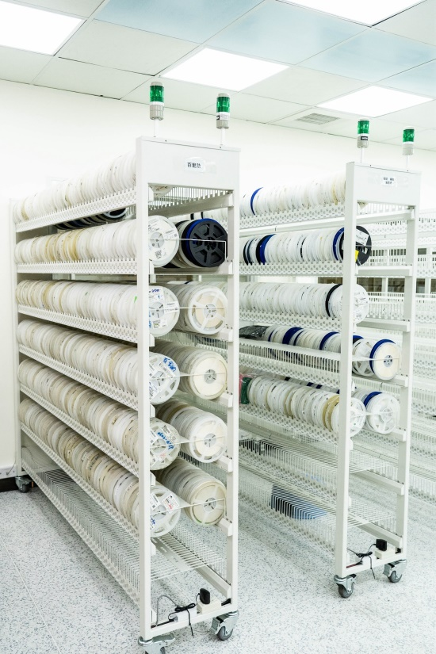
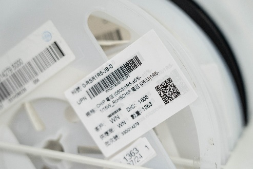
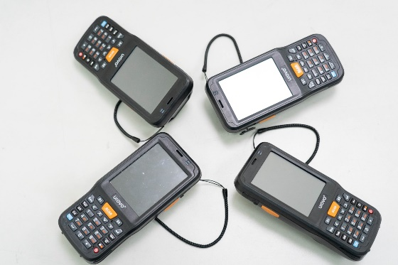
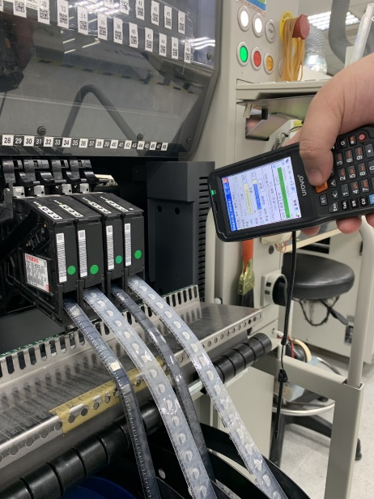

智能倉庫管理系統
本公司為增進生產效率及品質，特別導入MES置造管制系統(Manufacturing Execution systen)也稱為Shop Floor control 該系統包含了智能倉庫管理，防錯料管理及生產品質或維修管理等，使本公司縮短了備料、上料換線之時間，使生產更有效率，也可以管理追朔產品的生產及維修過程，使產品及物料的管理更智慧化、系統化，更重要的是以電腦進行稽核每一段製程的品質，確保產品生產的品質的真實性及一致性，以滿足客戶對嚴苛可信賴度產品的要求。
智慧倉庫管理功能亮點
- 多色燈管理，真正做到多工單同時發料。
- 根據料站法表發料，可管控到哪盤料需要上到哪個Feeder上。
- 提供整盤模式、散料模式、FIFO(先進先出)模式等。
- 提供多工單合併發料、首套發料、部分發料、拉動式發料、BIN值管理發料、客戶專用發料等。
- 應用電子料架車可實現產線機台料站表順序放置，並在續料時實現刷Feeder自動物料存放位置亮燈提醒。
- 應用電子料架車可實現機台低料預警功能。
- 實現防錯料唯一料盤上料規則，杜絕交叉接料錯誤。
- 提供循環盤點、週期盤點、倉庫、區域、貨架、自定義盤點。
- 提供呆滯料預警功能、保質期預警、庫齡預警。



防錯料作業
- 防止錯位和錯件生產。
- 自動記錄員工備料、對料、接料、卸料、異常操作訊息。
- 可自動完成扣料追溯以及物料預警。
- 全程PDA操作，發現異常自動停線。
- 當前機台用料剩餘數量看板顯示。
